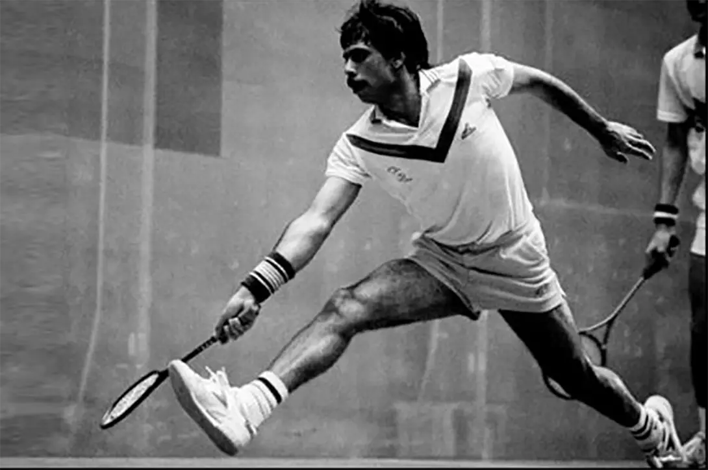

Over-Running Shots In Professional Squash
I am a traditionalist when it comes to movement. I believe that both over-running and diving are not the right way to move. However, when professionals players do something, I have to at least re-assess my assumptions because they are the pinnacle of the sport.
Just a little bit more...
It’s easy to not accept new fashion and trends, especially as you get older. I try hard top remain open-minded to as many things as possible. Just because something was done one way in the past and has always been done that way, doesn’t mean it’s the best way to do it now. For example, I believe that the heavier wooden and early graphite rackets required a more strict swing technique than modern lighter rackets.
That’s not to say that players can swing any way they want to, just that the range of acceptable technique has broadened. With that openness in mind, I’d like to look at one aspects of movement that have appeared in the last 10 years or so in the modern professional game. In a future article I will talk about diving.
What Is Over-Running
I was always taught that the last step towards the ball should be a longer lunge. This would allow you to transfer your weight into the ball, allow you more space to swing, and then facilitate the backward movement using your leg strength which would get you out of the way of your opponent and back towards the T in the fastest and most efficient way possible. I learnt this from Rahmat Khan, coach of the great Jahangir Khan. It’s not easy to do and does require very strong legs.
Notice how Jahangir is about to place his foot on the floor and transfer his weight into the ball. No over-running here!
The temptation is to bring the back leg forward to ease the work. There probably is a perfect compromise between keeping your back leg completely still and bringing it forward a little to make the movement backward faster, but too often amateur players bring that back leg right up to the lead leg and that’s a waste of two hole steps: one to bring it up, and one to move backwards.
Probably 90% of the time, modern professionals do the same. It’s easy enough to do a web search and find many photos of current professionals reaching, lunging and stretching to reach the ball with almost exactly the same technique. But there are a few images and I have seen it myself, a few players over-running the ball. Below is Mr. Gawad doing it.
I don’t know the circumstances of this photo. But what I can tell you is that he felt it was the only option. Perhaps if he had lunged, he would have been in the way, or perhaps it would have actually limited his options. There could be many reasons for his doing this. The key though is that it was a last-resort, born from a need rather than a weakness in his movement technique or core and leg strength.
One of my taglines is “YOU ARE NOT A PRO!“. I use it to remind my readers and viewers that just because you see a professional squash player do something, doesn’t mean you should too. I often finish that first part with “BUT YOU CAN TRAIN LIKE ONE“. In this case though, it is one of those situations where players see this type of thing and then use it as justification for their doing it.
The problem is that amateurs do it due to weak legs and core, and also because the quality of their movement is not very good. They hit, then watch what their opponent is doing, THEN run as fast as they can to reach the ball and have too much momentum to stop themselves, instead of hitting and moving to the T immediately, making the movement to the ball short and more controlled.
The question I want you to ask yourself is this: Is this the best way to move to the ball or am I doing it because I didn’t get to the T quickly enough after I hit my shot?
By over-running you almost certainly remove the option of hitting the ball straight. In some case, that might not matter, but even removing one option, allows your opponent better chances of reaching your other shots. Is it really worth it?
The best movers are the ones that move back to the T as quickly as possible and move to the ball as slow as necessary.
Continue Reading
• Previous: Should We Have A Synchronised Team Squash Drill Championship?
• Next: What Is The Working Boast In Squash?
• Random: Take A Chance!
• Popular: Is Squash Bad For Your Body?